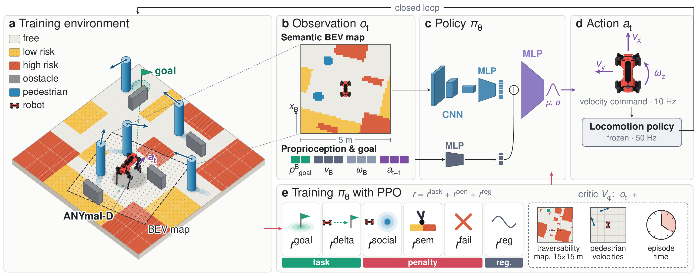
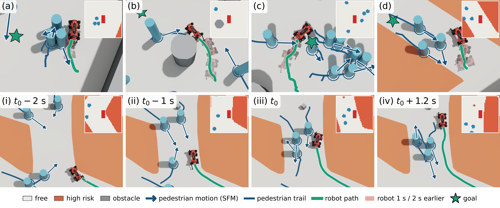

From simulation to the real world
Following Semantic Terrain Constraints While Adapting to Obstacles and Crossing Pedestrians
Among Crossing Pedestrians With Semantic Terrain Constraints
1.5× speedFollowing Semantic Terrain Constraints and Avoiding Static Obstacles
5× speedAbstract
Navigating crowded urban environments requires robots to avoid pedestrians while adhering to social norms such as remaining on sidewalks. Existing approaches typically address either crowd avoidance or semantic path planning in isolation. We propose a reinforcement learning (RL) navigation policy that jointly reasons about semantic terrain and dynamic obstacles from a single semantically annotated bird’s-eye-view (BEV) map, without relying on explicit human-state estimation. Our policy outperforms established crowd-navigation and semantic-aware baselines and transfers zero-shot to a legged robot, demonstrating socially compliant navigation in highly dynamic real-world scenarios.
One observation, joint reasoning
Semantic Terrain Meets Crowd Navigation
A shared spatial representation
Terrain classes and nearby pedestrians occupy the same robot-centric BEV map.
No explicit pedestrian states
At inference, the policy reasons from the map without explicit pedestrian positions or velocities as separate state inputs.
Zero-shot transfer
A policy trained in simulation produces navigation commands at 10 Hz on a real legged robot.

For real-world deployment, the BEV map combines a pre-defined semantic map with LiDAR-detected pedestrians.
Learning to share the space
Navigation in Simulation
